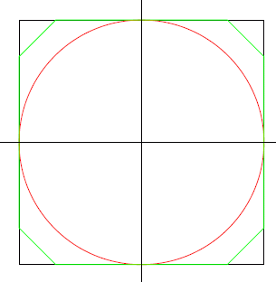

The moon has been opened up, and land can be obtained for free, but there is a catch. You have to build a wall around the land that you stake out, and building a wall on the moon is expensive. Every country has been allotted a $\pu{500 m}$ by $\pu{500 m}$ square area, but they will possess only that area which they wall in. $251001$ posts have been placed in a rectangular grid with $1$ meter spacing. The wall must be a closed series of straight lines, each line running from post to post.
The bigger countries of course have built a $\pu{2000 m}$ wall enclosing the entire $\pu{250 000 m^2}$ area. The Duchy of Grand Fenwick , has a tighter budget, and has asked you (their Royal Programmer) to compute what shape would get best maximum enclosed-area/wall-length ratio.
You have done some preliminary calculations on a sheet of paper.
For a $2000$ meter wall enclosing the $\pu{250 000 m^2}$ area the
enclosed-area/wall-length ratio is $125$.
Although not allowed , but to get an idea if this is anything better: if you place a circle inside the square area touching the four sides the area will be equal to $\pi \times \pu{250^2 m^2}$ and the perimeter will be $\pi \times \pu{500 m}$, so the enclosed-area/wall-length ratio will also be $125$.
However, if you cut off from the square four triangles with sides $\pu{75 m}$, $\pu{75 m}$ and $75\pu{\sqrt 2 m}$ the total area becomes $\pu{238750 m^2}$ and the perimeter becomes $1400+300\pu{\sqrt 2 m}$. So this gives an enclosed-area/wall-length ratio of $130.87$, which is significantly better.

Find the maximum enclosed-area/wall-length ratio.
Give your answer rounded to $8$ places behind the decimal point in the form abc.defghijk.
dev: solve(side_m=10, spacing=1) → █
main: solve(side_m=500, spacing=1) → █
extra: solve(side_m=1000, spacing=1) → █
Solution pending... the mathematician is still thinking.
Nothing here yet - come back when the dust has settled.